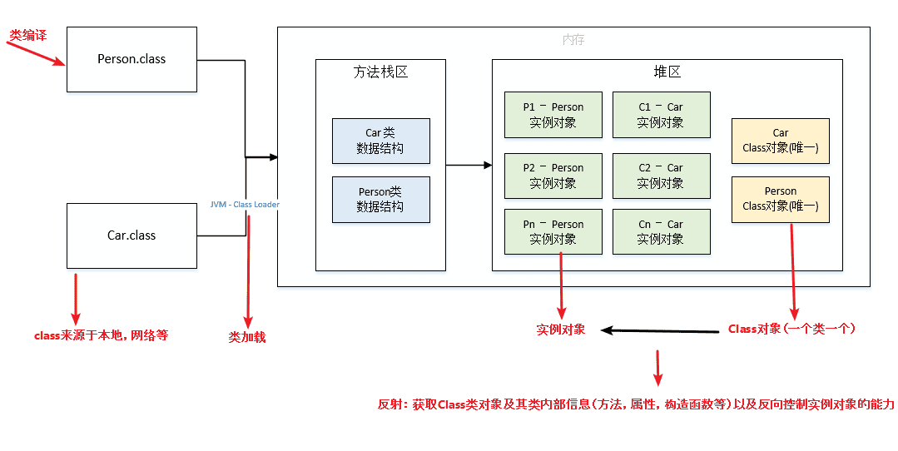
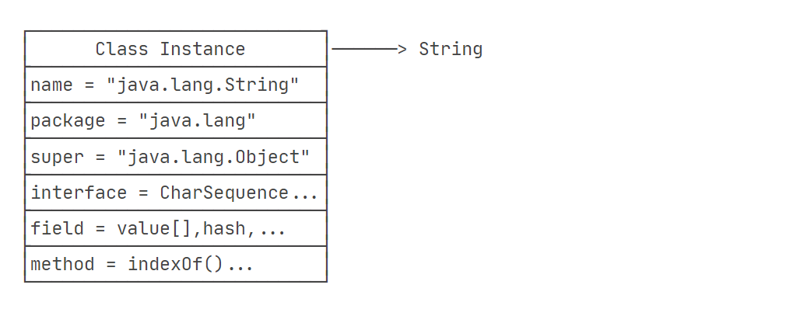
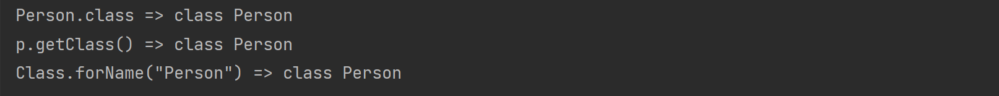
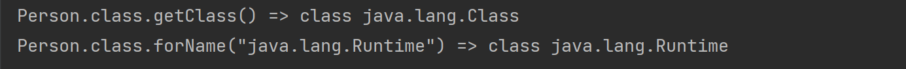
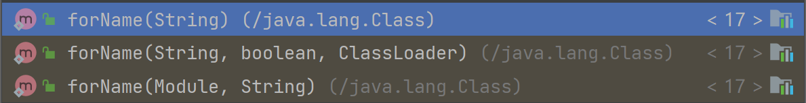
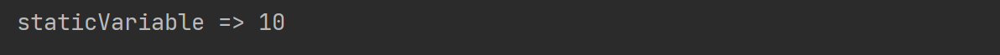
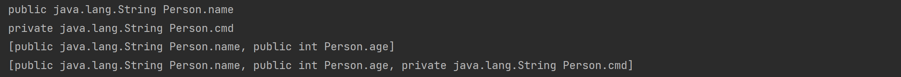

Reflection
- date
- 2023-09-10 12:08:13
在运行状态中，对于任意一个类，都能够知道这个类的所有属性和方法；对于任意一个对象，都能够调用它的任意一个方法和属性。这种动态获取的信息以及动态调用对象的方法的功能称为 Java 语言的反射机制。
Class 类
每个 Java 类运行时都在JVM里表现为一个 class对象，这个 class 对象中包含这个类的所有信息，包括类名、包名、父类、实现的接口、所有方法、字段等。
类的加载：

class 对象中包含着该类的所有信息：

获取 Class 对象
| public class Reflection {
public static void main(String[] args) throws ClassNotFoundException {
Person p = new Person("test",18);
// 1. 直接获取类的 class 属性
System.out.println("Person.class => "+ Person.class);
// 2. 通过类的对象的 getClass() 方法
System.out.println("p.getClass() => "+ p.getClass());
// 3. 通过 Class 对象的 forName() 方法
System.out.println("Class.forName(\"Person\") => "+ Class.forName("Person"));
}
}
|

这里获取到了 Person 类，从上面 "类的加载" 图中可以看出，每个 java 类其实都是一个 Class 类的对象，那么这个 Person 类也就是 Class 类的对象。我们可以再对这个对象进行获取类：
那么它们也就可以使用 getClass() 和 forName("Person") 方法。
| public class Reflection {
public static void main(String[] args) throws ClassNotFoundException {
Person p = new Person("test",18);
// 1. 获取 Person.class 的类, 这里的 Person.class 其实就是 Class 对象
System.out.println("Person.class.getClass() => "+ Person.class.getClass());
// 2. 通过 Class 对象调用 forName() 方法指定类名获取类
System.out.print("Person.class.forName(\"java.lang.Runtime\") => ");
System.out.println(Person.class.forName("java.lang.Runtime"));
}
}
|

Class.forName() 方法是有几个函数重载的：

总共是有 3 个，它们的内部调用的其实是一个 本地方法 forName0()
这个本地方法的目的是根据传入的参数加载指定的类并返回对应的 Class 对象。
name：要加载的类的全限定名。initialize：一个布尔值，指示是否在加载类之前进行初始化。- 如果为
true，则执行类的静态初始化块；
- 如果为
false，则不进行初始化。
loader：要使用的类加载器。它指定了加载类的特定类加载器，如果为 null，则使用默认的类加载器（ 根据类名加载 ）。caller：调用者类，用于判断安全上下文。
而 Class.forName(String) 这个方法，其内部其实 initialize 是为 true 的，也就是在使用 Class.forName(String) 时，该类会进行初始化操作。
| @CallerSensitive
public static Class<?> forName(String className)
throws ClassNotFoundException {
Class<?> caller = Reflection.getCallerClass();
return forName0(className, true, ClassLoader.getClassLoader(caller), caller);
}
|
当类初始化时，它会执行类中的 静态代码块 和 静态变量初始化 ，格式如下：
| public class MyClass {
// 静态变量初始化
public static int staticVariable = 10;
// 静态代码块执行
static {
System.out.println("staticVariable => "+ staticVariable);
}
}
|
我们通过 Class.forName(String) 调用该类，static{} 就会执行：
| public class Reflection {
public static void main(String[] args) throws ClassNotFoundException {
Class.forName("MyClass");
}
}
|

访问字段
对任意的一个 Object 实例，只要我们获取了它的 Class ，就可以获取它的一切信息。
这里先获取字段的 Field 对象：
| import java.util.Arrays;
public class Reflection {
public static void main(String[] args) throws ClassNotFoundException, NoSuchFieldException {
// 获取 Person 类
Class personClass = Class.forName("Person");
// 1. getField(name) 获取 public 字段
System.out.println(personClass.getField("name"));
// 2. getDeclaredField(name) 获取 private/public 字段
// ( Declared 的都包括父类, 不加的不包括 )
System.out.println(personClass.getDeclaredField("cmd"));
// 3. getFields() 获取所有 public 字段
System.out.println(Arrays.toString(personClass.getFields()));
// 4. getDeclaredFields() 获取所有字段
System.out.println(Arrays.toString(personClass.getDeclaredFields()));
}
}
|

Field 对象常用的方法：
getName(): 获取字段的名称。getType(): 获取字段的类型，返回一个 Class 对象。getModifiers(): 获取字段的修饰符，返回一个代表修饰符的整数值。get(Object obj): 获取指定对象中该字段的值，如果字段为静态字段，可以将 obj 参数设为 null。set(Object obj, Object value): 将指定对象中该字段的值设置为给定的值，如果字段为静态字段，可以将 obj 参数设为 null。isAccessible(): 判断字段是否可访问，返回一个布尔值。setAccessible(boolean flag): 设置字段的可访问性，如果参数为 true，则可绕过访问权限进行访问。
| import java.lang.reflect.Field;
import java.util.Arrays;
public class Reflection {
public static void main(String[] args) throws ClassNotFoundException, NoSuchFieldException, IllegalAccessException {
// 获取 Person 类
Class personClass = Class.forName("Person");
Field priName = personClass.getField("priName");
Person p = new Person("pri");
// private 类型, 需要设置字段的可访问性
priName.setAccessible(true);
// 设置值
priName.set(p,"pirNameTestSet");
// 打印值
System.out.println("priName => " +priName.get(p));
}
}
|
调用方法
获取类的方法对象 Method ：
Method getMethod(name, Class...)：获取某个public的Method（包括父类）Method getDeclaredMethod(name, Class...)：获取当前类的某个Method（不包括父类）Method[] getMethods()：获取所有public的Method（包括父类）Method[] getDeclaredMethods()：获取当前类的所有Method（不包括父类）
Method 对象常用方法：
getName(): 获取方法的名称。getReturnType(): 获取方法的返回类型，返回一个Class对象。getParameterTypes(): 获取方法的参数类型，返回一个Class对象数组。getModifiers(): 获取方法的修饰符，返回一个代表修饰符的整数值。invoke(Object obj, Object... args): 调用该方法，将参数obj指定的对象作为方法的调用者，如果方法是静态方法，可以将此参数设置为 null，因为静态方法不依赖于特定的对象实例，args是方法的参数列表。isAccessible(): 判断方法是否可访问，返回一个布尔值。setAccessible(boolean flag): 设置方法的可访问性，如果参数为true，则可绕过访问权限进行调用。
| public class Reflection {
public static void main(String[] args) throws ClassNotFoundException, NoSuchMethodException, InvocationTargetException, IllegalAccessException {
// 获取 class 对象
Class<?> person = Class.forName("Person");
// 1. 获取 Person 对象中的 rce 方法, 参数为 string 类型
Method rce = person.getMethod("rce", String.class);
// 2. 使用 invoke() 执行方法
rce.invoke(new Person(),"calc");
}
}
|
这里在利用反射调用达到命令执行的效果：
Java 中的命令执行方法：Runtime.getRuntime().exec()
看一下 Runtime 包：
| public class Runtime {
// 静态变量, new Runtime() 创建对象, 赋值给 currentRuntime
private static final Runtime currentRuntime = new Runtime();
// 静态方法 getRuntime() 获取这个静态变量实例, 其实就是获取一个 Runtime 的对象
public static Runtime getRuntime() {
return currentRuntime;
}
// exec() 命令执行函数, 非静态, 需要对象
public Process exec(String command) throws IOException {
return exec(command, null, null);
}
}
|
在使用 invoke 调用方法时，需要去创建一个 Runtime 类的实例作为参数，然后再去执行函数。这个实例需要去创建。
而 Runtime 类中的 静态变量 就相当于一个构造方法，恰巧使用 Class.forName 时，类会有一个初始化操作， 静态变量 会在初始化时执行。而 getRuntime() 又只是一个静态方法，不需要对象就可以执行。
接下来可以通过 getMethod 获取 exec() 方法，再通过 getRuntime() 方法获取 Runtime 实例对象，就可以执行命令了。
| public class Reflection {
public static void main(String[] args) throws Exception {
// 1. 加载 java.lang.Runtime 类
Class aClass = Class.forName("java.lang.Runtime");
// 2. 获取 exec(string) 方法
Method exec = aClass.getMethod("exec", String.class);
// 3. 获取 Runtime 对象
Object getRuntime = aClass.getMethod("getRuntime").invoke(null);
// 4. 执行命令
exec.invoke(getRuntime,"calc");
}
}
|
调用构造方法
Class.newInstance() 调用（ 只能调用该类的 public无参数构造方法 ）
| public class Reflection {
public static void main(String[] args) throws ClassNotFoundException,IllegalAccessException, InstantiationException {
Class<?> person = Class.forName("Person");
// 直接调用 newInstance() 方法
person.newInstance();
}
}
|
使用 Constructor 对象的newInstance() 方法，这样可以返回一个对象：
通过Class实例获取Constructor的方法如下：
getConstructor(Class...)：获取某个public的Constructor；getDeclaredConstructor(Class...)：获取某个Constructor；getConstructors()：获取所有public的Constructor；getDeclaredConstructors()：获取所有Constructor。
| public class Reflection {
public static void main(String[] args) throws ClassNotFoundException, IllegalAccessException, InstantiationException, NoSuchMethodException, InvocationTargetException {
Class<?> person = Class.forName("Person");
// 1. 获取 Constructor 对象, 参数为 String 类型
Constructor<?> constructor = person.getConstructor(String.class);
// 2. 调用 Constructor 对象的 newInstance() 方法
// 返回一个 Object 对象, 类型转换为 Person 对象
Person calc = (Person) constructor.newInstance("calc");
// 3. 调用 Person 对象的方法
calc.Rce();
}
}
|
{kind=link}
{kind=link}
{kind=link}
{kind=link}
{kind=link}
{kind=link}
{kind=link}